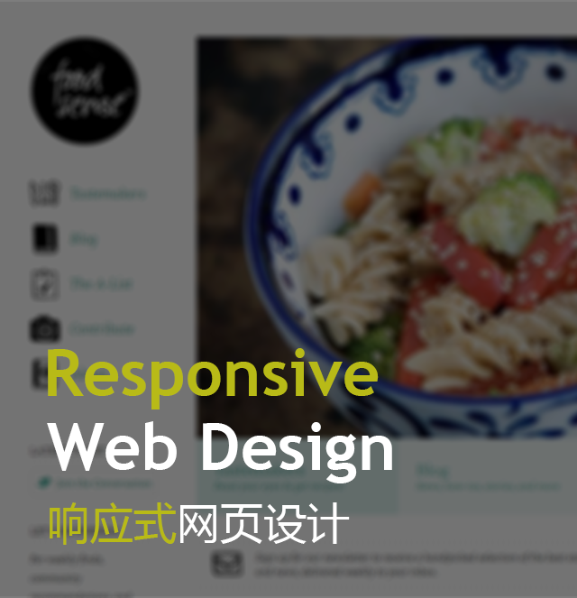
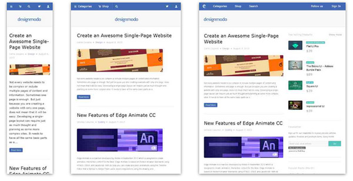
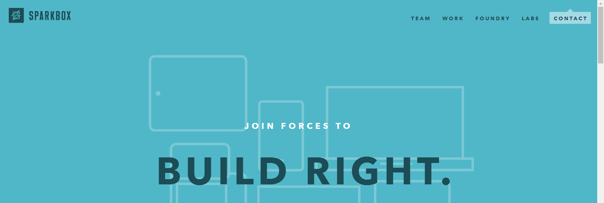
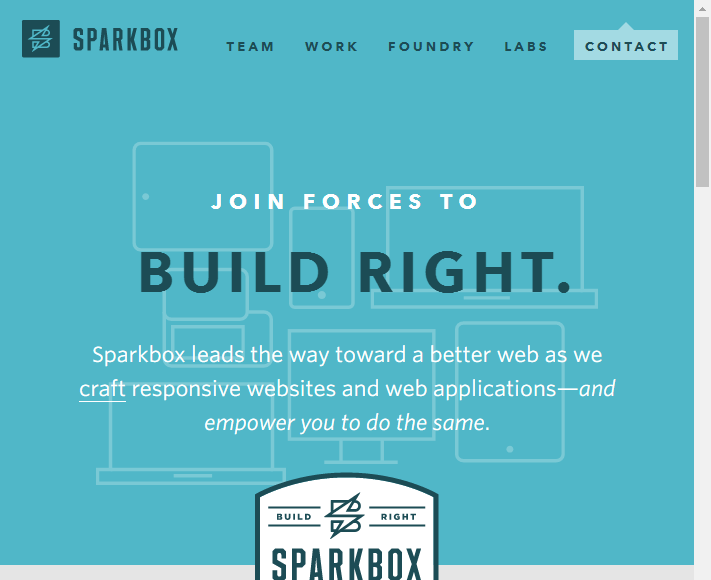
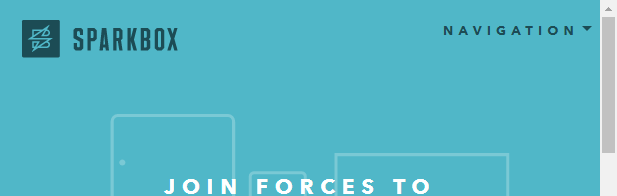
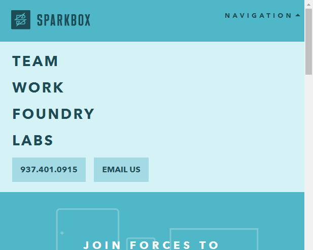
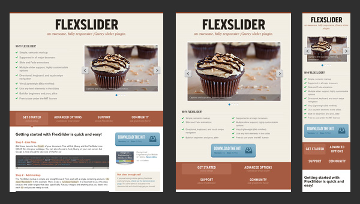
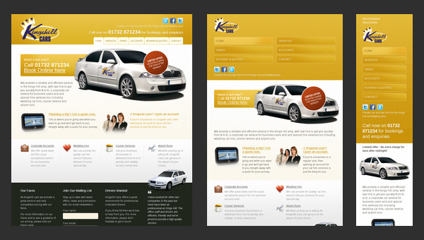

摘自：https://designmodo.com/responsive-design-examples/
翻译 | 谢晓聪
时间 | 2017-04-15
响应式网页设计术语与开发网站设计的概念有关，它有助于根据用户的计算机屏幕分辨率进行更改。更确切地说，这个概念允许先进的4列布局1292像素宽，当变成一个1025像素的宽度屏幕时，自动简化成2列。此外，它适当地固定在智能手机和电脑平板屏幕。这种特殊的设计技术，我们称之为“响应设计”。
这里有个测试网站响应式结构设计的工具：https://designmodo.com/responsive-test/
响应式网页设计完全不同于以往的传统式网页设计，开发设计者（尤其是尝鲜者）必须知道其设计中的优势以及劣势。这个博客本身就是一个很好的响应式设计的案例，我们将揭示使用响应式设计所遇到的一些实例。而最基础也是相对核心的就是如何选择内容的弹性展示来提升响应式设置。然而我们都要面对一个无法回避的问题，就是当不同尺寸窗口间相互切换时如何让内容的弹性布局切换更流畅，因为每一次的网页外观和组织的突变都会给用户体验带来剧变。专家建议使用CSS做一些过度转化，使变化更为柔和流畅。
响应式设计案例

Designmodo有着干净以及清晰的界面设计，同时伴随着不同宽度尺寸有着不同版式的响应式设计界面。图片以及文字各自独立的缩放可以完美的适应各种尺寸的屏幕设备。

如今这种灰色调静态网格的网站看起来貌似有点无聊和乏味，但当它结合了响应式的设计处理后，根据不同尺寸的变化却会有种很经典且高端的feel~(原文用high-end layout)

sparkbox演示一个企业网站的基本结构。布局非常简单，它是基于一个标准的，常用的一组水平条纹，以非侵入性的方式呈现数据。这样的结构真的很容易适应各种屏幕尺寸。被替换的装饰性内容的顺序排列发生变化相当顺利和轻松，给用户一个好看的和组织良好的布局。
这里我们放大一个细节，就是关于其NAV导航栏的响应式变化，在宽度大于等于702像素时，导航栏里的内容是呈正常排序以及外露显示的：


一旦当页面宽度小于702像素时，导航栏内容就被折叠起来了，这是个不错的示范：


FlexSlider

FlexSlider我们可以看到在做不同尺寸切换时，针对TAB选项以及内容的切换展示的处理，无论在哪个尺寸的设备上都是能清晰的找到这个4个TAB项。

关于这个网页，和之前的sparkbox稍有不同，前者是采用折叠的方式将导航栏内容隐藏至下拉选项中，而后者Kings Hill Cars则是以一种更为突出明显的方式将导航栏在小尺寸的屏幕设备中展示出来。
总结
响应式页面设计包含了许多方面的考虑。完全自适应并不意味着仅仅只是将移动设备和桌面设备之前的界面处理得更为友好，它还包括出于为更大尺寸的大屏设计而做的考虑。此外，这个功能不再像以前传统的网页设计，只是会给出两个呆板的选项“移动版”和“桌面版”，每一个网站，无论是一个艺术家的个人页面又或是正规的企业门户都应该做到快速且有效的根据屏幕尺寸的变化而发生改变。